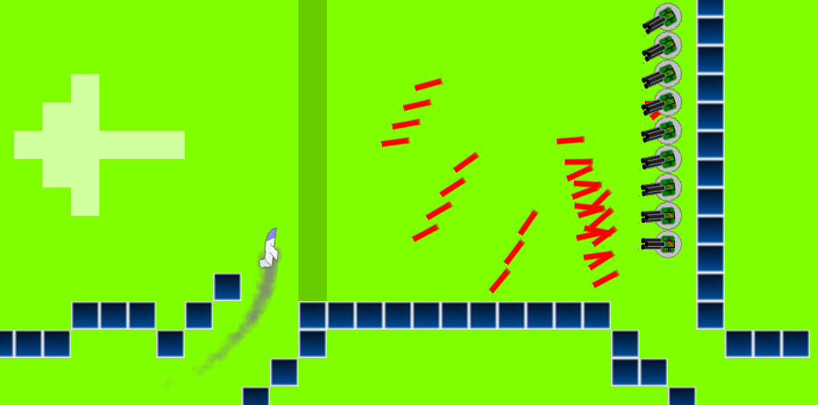
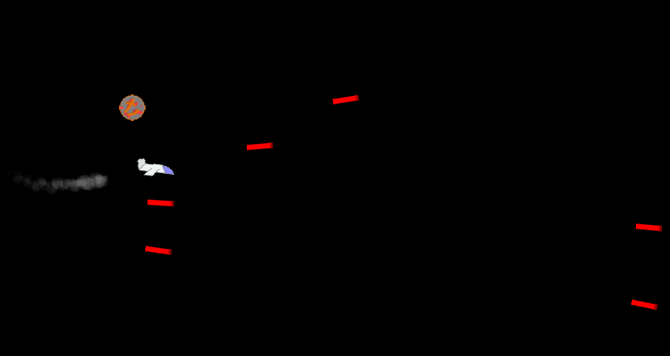

The Thunder Fly 5
Вам предлогается преодолеть 24 уровня ища возможности и терпя поражение,добиваясб великих побед,ведь это Тандер Флай.


Мы в версии 5 добавили:
Версус мод-Режим на 2 игрока в котором 1 игрок управляет пушками а другой самолётиком.
Прохождение и открытие уровней(Сохранений после выхода пока что нет).
Перерисовали пушки и другие объекты.
Немного сделали редактор уровней который вы сможете лицезреть после прохождения всех 24 уровней)).
Скачать!!!
FlyTunder-Default-5.0.0.2.exe
FlyTunder4.zip